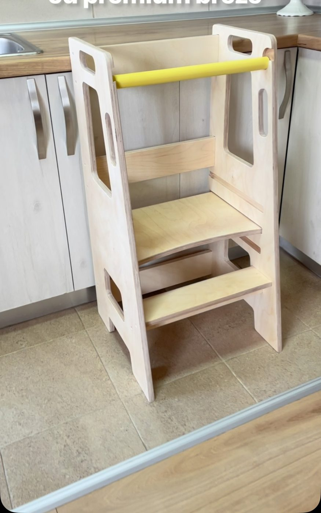
Igračke i pomagači od breze i bukve, ručno izrađeni, sa zaobljenim ivicama i bojama na vodenoj bazi.

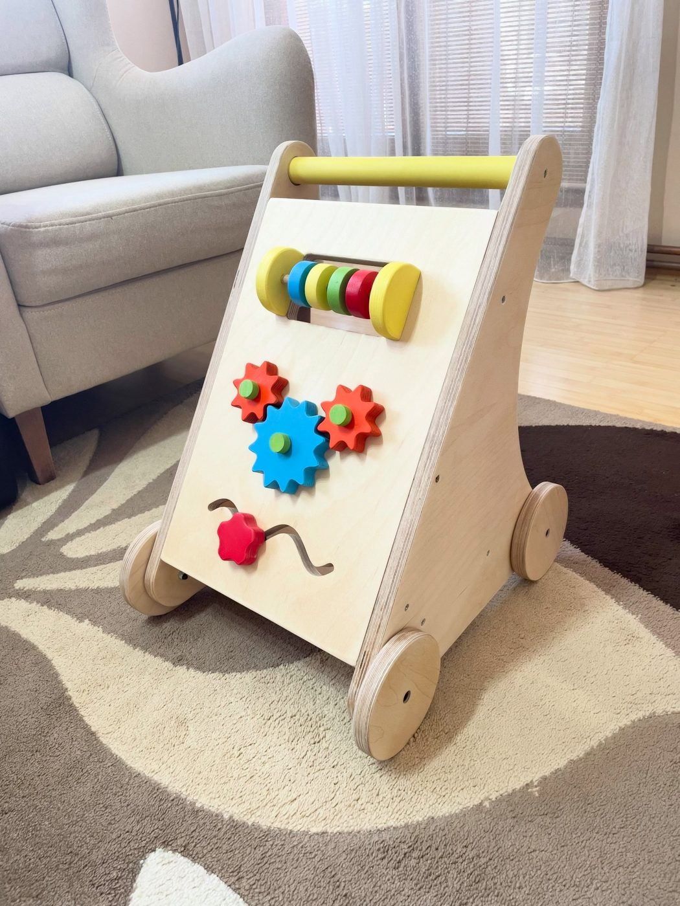
Tri nivoa visine, od prve do pete godine.
12.000 RSD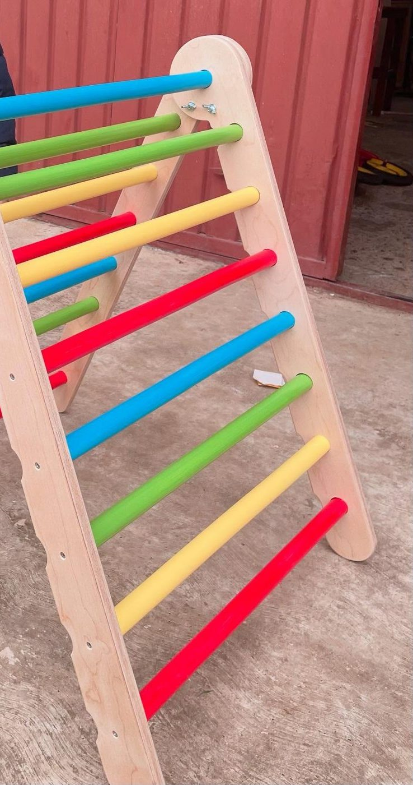
Penjanje, provlačenje, ravnoteža i samopouzdanje.
12.000 RSD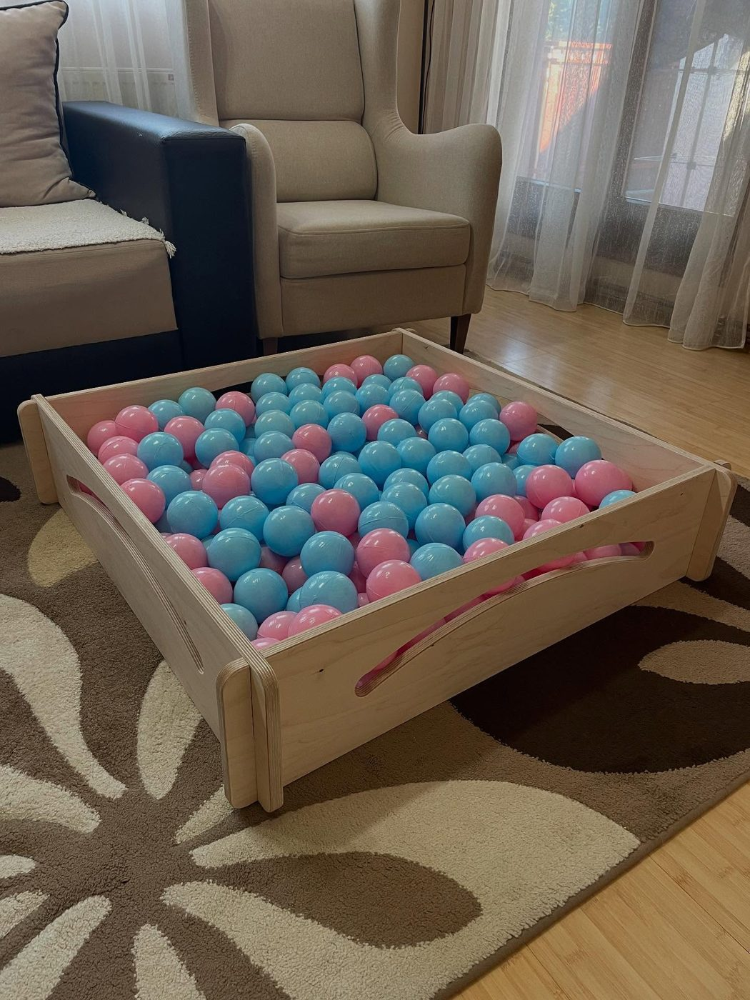
95 × 95 × 22 cm, u kompletu 200 loptica u boji po izboru.
12.000 RSD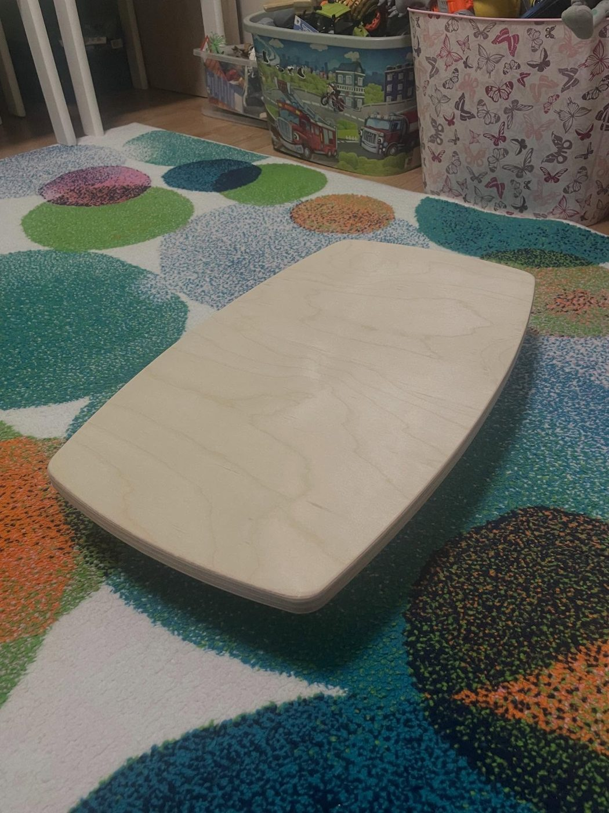
Ljuljanje, most, tunel — igra bez ograničenja.
2.500 RSDOslonac za prve korake i aktivna tabla sa zupčanicima. 50 × 36 × 41 cm.
Cena na upit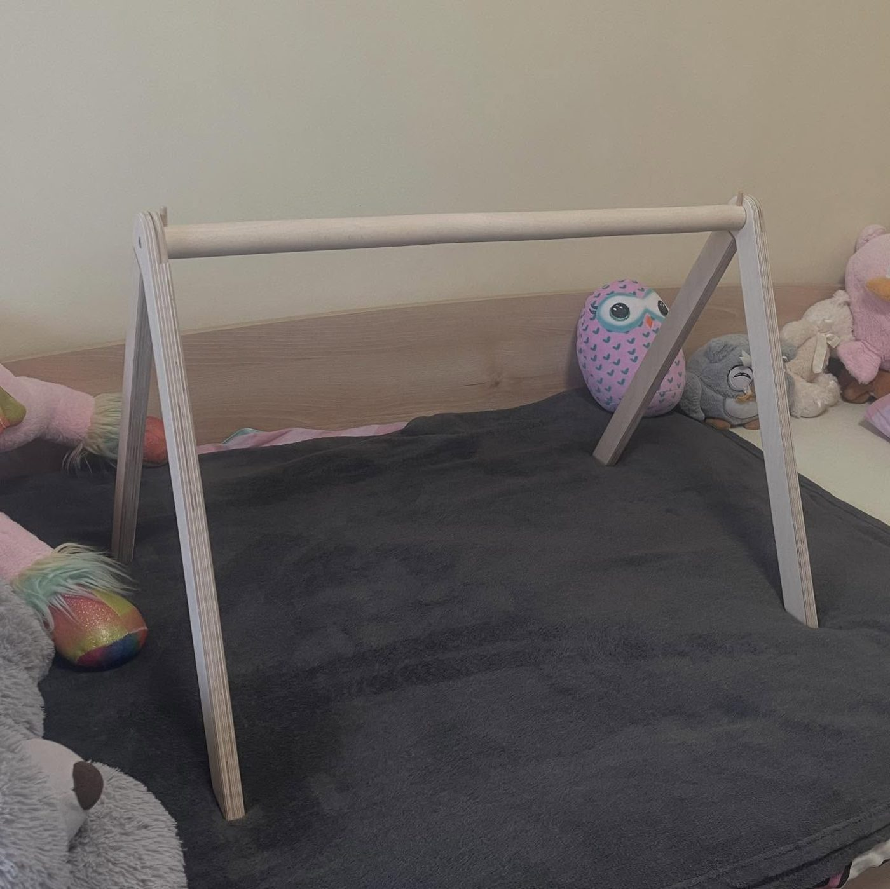
Sklapa se sa dva šrafa. 50 × 50 × 70 cm.
Cena na upit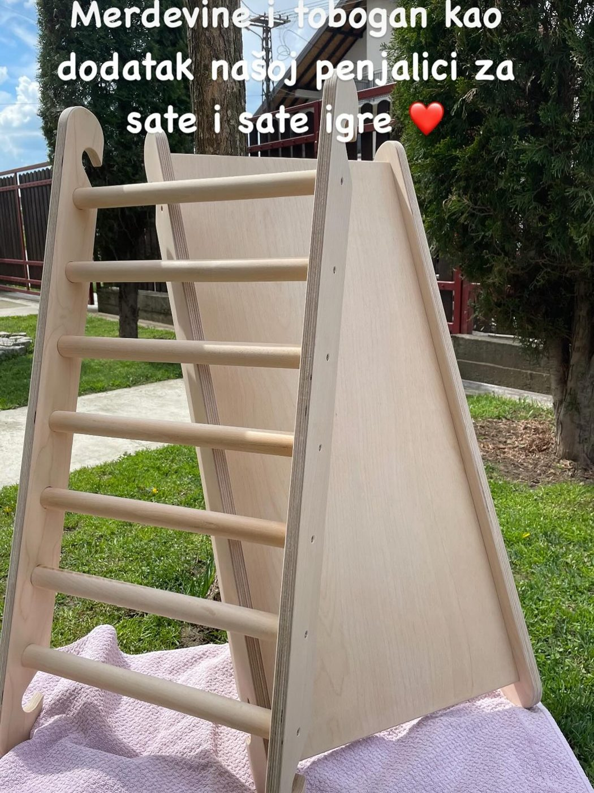
Merdevine i tobogan za pravi kućni poligon.
Cena na upit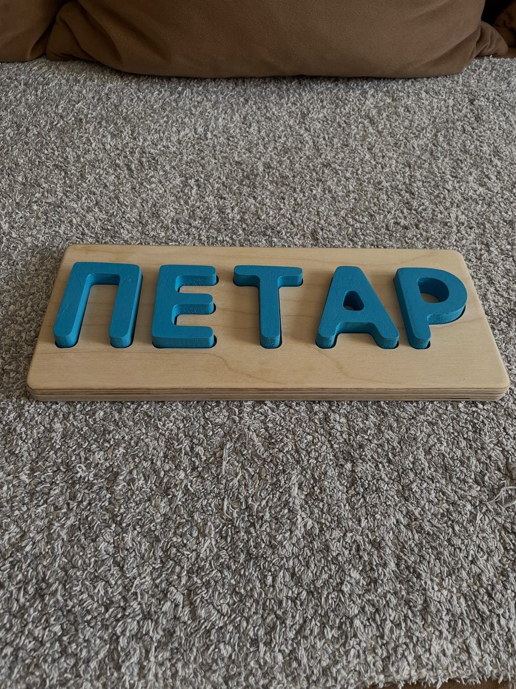
NovoIme po želji, nežne boje. Prva probna verzija.
Cena na upit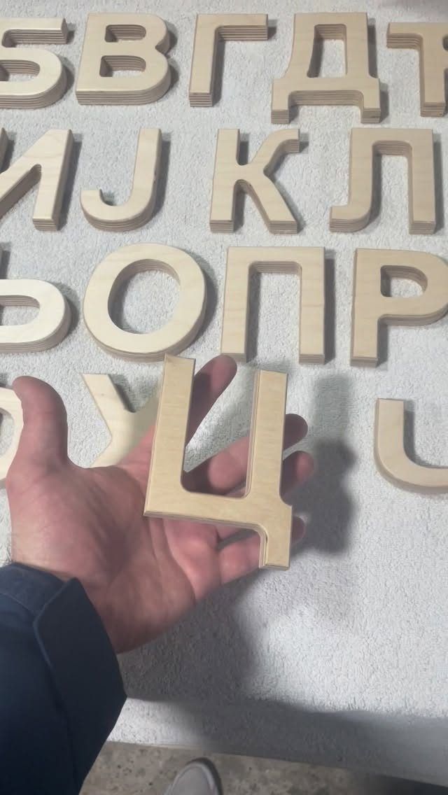
Visina 10 cm, mekana na dodir, potpuno bezbedna.
Cena na upit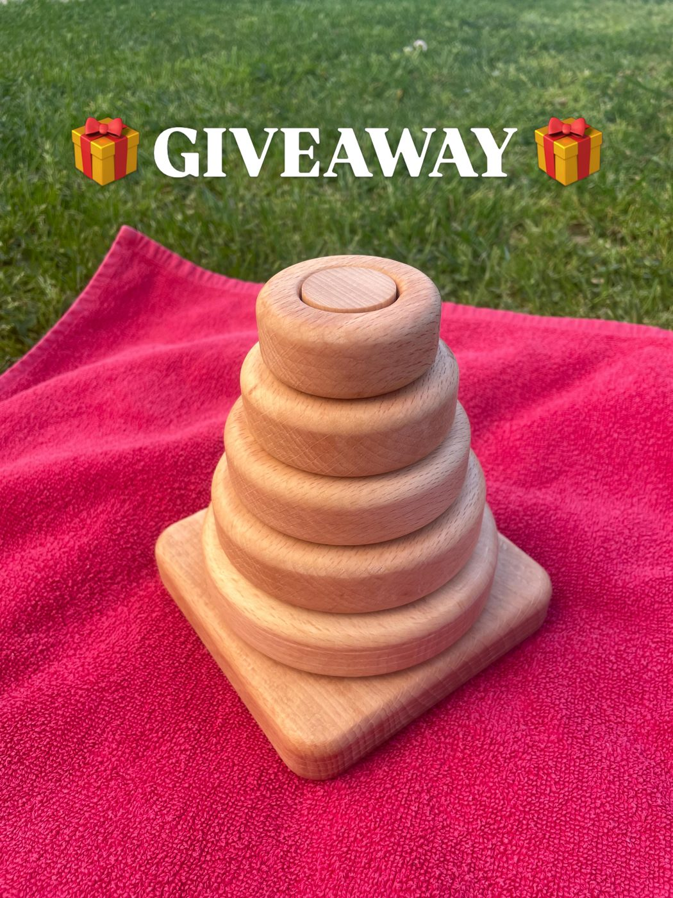
Ručno rađena Montessori slagalica od prirodne bukve.
Cena na upit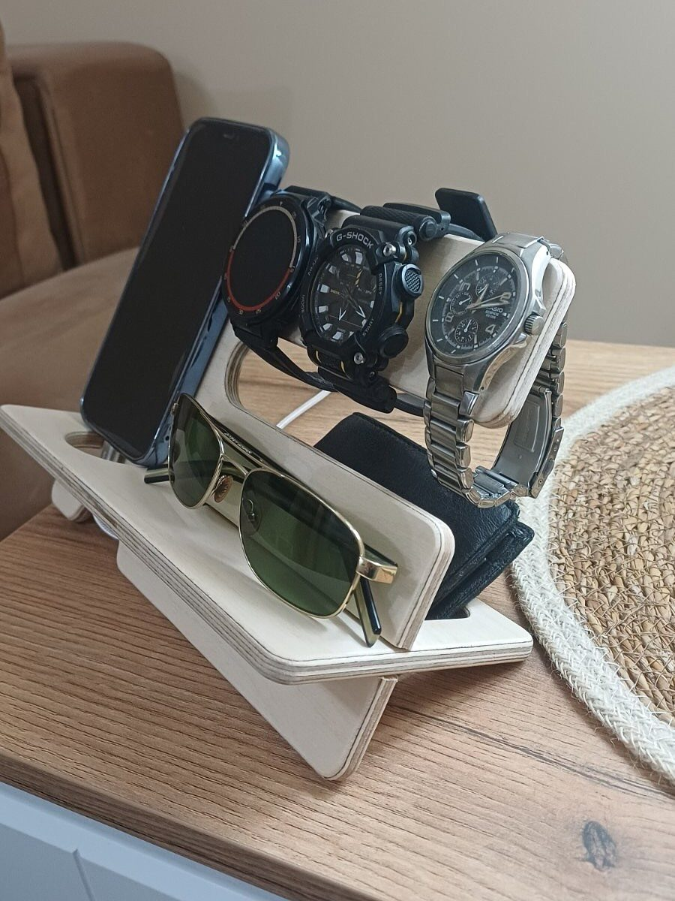
Satovi, telefon, naočare, novčanik i ključevi na jednom mestu.
Cena na upitDetaljna stranica postoji za kuhinjski toranj; ostale igračke se poručuju u poruci na Instagramu.
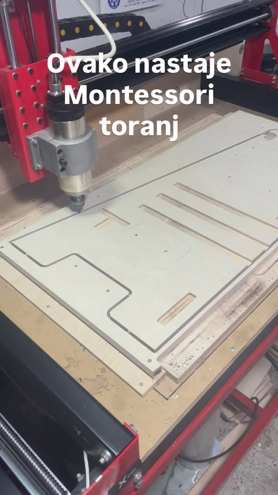
Šperploča breze 18 mm, CNC preciznost i potpuno ručna završna obrada. Svaki toranj pravimo pažljivo i bez kompromisa, sa savršeno zaobljenim ivicama.
…toranj je izuzetno stabilan i kvalitetan, i ima tri nivoa tako da raste sa detetom… ovo je definitivno najbolja opcija na tržištu, ako ne želite da beba preraste za čas. A usput stvarno kvalitetno.Ana · njena priča na Instagramu
Toranj je prevazisao sva nasa ocekivanja, sin je odusevljen! Svaka vam cast, zaista je kvalitetno uradjen!Kupac · poruka u DM-u
Stigao je toranj! Bebac je prezadovoljan, hvala punoKupac · poruka u DM-u
Preeeedivan je, cvrst, stabilan... Ma sjajan!Kupac · poruka u DM-u
Prezadovoljni smo i mnogo nam znaci zbog razvoja motorike! Preporucicemo Vas drugarima!Kupac · poruka u DM-u
Utisci su preuzeti iz istaknutih priča „Vaši utisci“ na Instagram profilu @drvotvorine_sabac, u izvornom obliku. Imena kupaca u porukama nisu objavljena.
Recite koju igračku želite (i boju prečke ili loptica).
Potvrđujemo cenu, rok izrade i način plaćanja.
Paket stiže na vašu adresu, dostava je moguća širom Srbije.
Porudžbine primamo u poruci na Instagramu (@drvotvorine_sabac).
Da, dostava je moguća širom Srbije.
Od brezove šperploče i punog drveta bukve, sa zaobljenim ivicama. Farbane su bezbednim bojama na vodenoj bazi.
Cenu dostave i rok izrade potvrđujemo u poruci prilikom poručivanja.